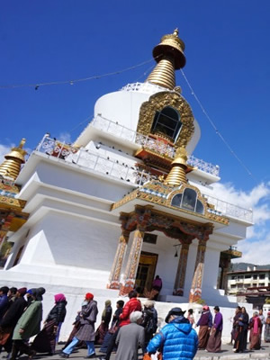
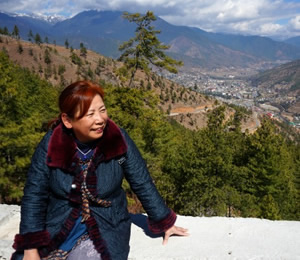

ブータン王国は世界178カ国を対象にした「GNH（国民総幸福量）ランキング」で世界8位。ブータン国民の98％が幸福だと答える。
上位はスイス、オーストリア、スウェーデンなど先進国が占め、日本のランクは90位。ブータン王国と日本、この幸せ度の違いとは―――。

この２月、インドで開催された日印ホメオパシー国際カンファレンス終了後、ブータン王室を訪問しました。王室訪問は、国王自ら「私はホメオパシーのビッグサポーターです」と公言する通り、ホメオパシーに信頼を寄せている縁で実現したもの。第3代の皇后様と第5代現国王への拝謁が叶い、「幸福な国 ブータン」の所以をとなる様々なお話を1時間45分にわたって伺うことができました。
現国王の祖父にあたる第３代国王はモーダニゼーションキングとよばれ、電気や自動車などを入れ近代化を目指しましたが46歳の若さで崩御され、現国王の父君が16歳の若さで第4代国王に即位されました。その第4代国王が現在のブータン王国の基礎を築いたのです。
第4代国王は一旦、近代化を歩みはじめたところを「ブータン」にとってはどうなのか？と考え、独自の文化を守る道を選ばれました。国民総生産量ではなく、国民の総幸福量に重きをおき５大政策を定め、国民が自国を愛し、尊厳を失わないようにとしたのです。
・外国資本を入れない
・自給自足
・化学肥料を使わない
・村人同士が助け合う（互助の徹底、仲間意識）
・国民の安心できる生活（医療、教育の無料化）
ブータン王国はヒマラヤ山脈に抱かれた自然豊かな土地ですが、一方で昼と夜とでは寒暖差が激しく、人が住まう環境としてはとても厳しいところです。この自然が織りなす美しさ、厳しさを愛し、人々が協力し助けあって生きていくことができるこの政策は大変素晴らしいと思います。競争意識や損得関係では生き抜くことは難しく、近代化とともに心も荒れてしまっていたでしょう。
人の幸せは競争して勝つことや物質的に豊かになることの中にあるのではなく、皆が仲間意識をもって一人一人が皆の幸せのために自分ができることをやることの中にあるのだ、ということを改めて気づかせていただきました。
日本が近代化で失ってしまったスピリットがここにはありました。私達は一回魂の目的を失ってしまいましたが、今取り戻そうとしていることとブータンから学びたいという思いを国王にお伝えしました。
今回、現在の第５代国王に日本豊受自然農の活動映像をご覧いただきました。とても興味を示していただき、種のキットなどを進呈し、エキネシアの話も出て白い花の種をお送りするお約束をしました。
そして国王へ10年以上、私が旅や出張に出る際に持参していた小さな不動明王の像を献上し、「不動明王もブータンの地に帰れて、ましてや王を守る役目をいただいて喜んでいると思います」とお伝えしたところ、「必ず私はこの像を他を訪れる際に持っていこう」とおっしゃっていただきました。
Update / 2015.03

由井 寅子（ゆい とらこ）
「日本豊受自然農」代表。日本ホメオパシー界の第一人者としてのキャリアを基に、安心安全な作物にこだわり、無農薬・無化学肥料・自家採種に徹した独自の自然農法を確立、健康食品や化粧品の開発もてがける。ホメオパシー名誉博士。農民。